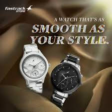
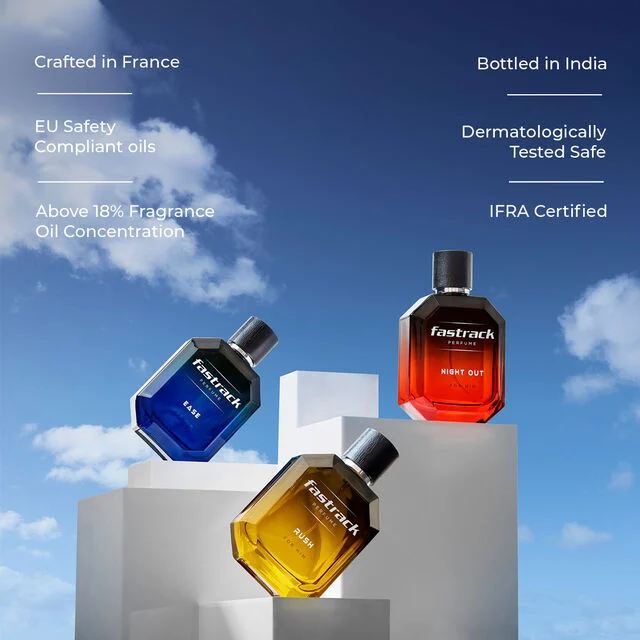

Finding Your Signature Scent: A Guide to Fastrack Perfumes
How to choose the perfect fragrance for your personality, mood, and lifestyle from our diverse collection.
Read More →Discover our bold collection of watches, sunglasses, and perfumes designed for the youth who dare to stand out
Explore Our CollectionPublished on March 8, 2025 | By Watch Enthusiast
In a world where personal style speaks volumes, Fastrack has emerged as the ultimate brand for the bold, the fearless, and the trend-setting youth of today. From eye-catching watches that do more than tell time to statement sunglasses that turn heads and captivating perfumes that leave lasting impressions – Fastrack offers the complete package for those who refuse to blend in. Let's dive into why Fastrack's trio of fashion essentials should be your go-to choice for expressing your unique personality.
Fastrack understands that today's youth demands more than just functional products – they crave accessories that reflect their individuality, attitude, and energy. That's why our collection spans three essential categories designed to complement and enhance your personal style.
A Fastrack watch isn't just a timepiece – it's a declaration of who you are. With bold designs, vibrant colors, and innovative features, our watches perfectly balance functionality with head-turning style. Whether you're into minimalist chic, sporty vibes, or avant-garde designs, we've crafted collections that resonate with every personality.
Our latest watch collections feature cutting-edge materials, striking color combinations, and unexpected details that make them instantly recognizable. From water-resistant models perfect for adventure seekers to sleek digital displays for tech enthusiasts, Fastrack watches are designed to keep up with your dynamic lifestyle while making a powerful style statement.
Nothing completes an outfit quite like the perfect pair of sunglasses, and Fastrack's eyewear collection delivers style with substance. Our sunglasses combine trend-forward designs with quality materials and UV protection, ensuring you look amazing while keeping your eyes safe.
From oversized frames that channel retro vibes to sleek aviators that never go out of style, our sunglasses collection offers endless possibilities to express yourself. With polarized options for the outdoor enthusiasts and gradient lenses for the fashion-forward, Fastrack sunglasses are the ultimate accessory for year-round style.
Complete your personal style statement with Fastrack's collection of signature scents. Our perfumes and fragrances are crafted to capture attention and create memorable impressions wherever you go. From fresh, energetic daytime scents to sophisticated evening fragrances, we've created options for every occasion.
Unlike generic mass-market perfumes, Fastrack fragrances are designed with unique notes and surprising combinations that stand out from the crowd. Affordable luxury at its finest, our perfumes prove that making a sensory impact doesn't require spending a fortune.
Every season brings fresh innovations to the Fastrack lineup, and 2025 is no exception. Here are the standout trends currently dominating our collections:
Electric colors are making a major comeback across all our product lines. From watches with neon accents to sunglasses with bold colored frames and perfumes in vibrant packaging, these eye-catching hues are perfect for those who want to make an unmistakable statement.
Our new eco-conscious lines feature recycled materials, reduced packaging, and environmentally friendly production processes without compromising on style or quality. Looking good while doing good has never been easier with Fastrack's green initiatives.
Our latest watches bridge the gap between traditional timepieces and smart technology, offering subtle connectivity features without the bulky look of typical smartwatches. These hybrid designs give you the best of both worlds – classic style with modern functionality.
Breaking away from restrictive conventions, Fastrack's newest collections are designed for expression regardless of gender. Our accessories focus on personal style rather than outdated categories, allowing everyone to choose products based on preference rather than prescribed norms.
With such a diverse range of products, you might wonder where to begin your Fastrack journey. Here's our guide to curating your personal Fastrack collection:
Choose the accessory that speaks to you most – whether it's a bold watch, statement sunglasses, or captivating fragrance. This cornerstone item will become your style signature and set the tone for future additions.
Are you constantly on the move? Look for durable watches with stopwatch features and sporty sunglasses. More of a social butterfly? Our evening-ready timepieces and longer-lasting perfumes might be your perfect match.
Don't be afraid to create your own Fastrack ecosystem. A watch from our Minimalist collection can pair perfectly with bold sunglasses from our Urban line, creating a balanced look that's uniquely yours.
Fastrack's affordable price points make it easy to update your collection with seasonal trends. Consider adding limited-edition pieces to keep your style fresh and current throughout the year.
Fastrack offers a stunning collection of watches, sunglasses, and perfumes designed to complement each other and enhance your personal style. Express yourself with our affordable yet striking accessories that make every day an opportunity to stand out.
Shop the CollectionIn a world where personal identity is increasingly expressed through carefully curated style choices, Fastrack stands out as a brand that truly understands youth culture. Our accessories aren't just products – they're extensions of your personality, tools for self-expression, and symbols of your unique perspective.
What sets Fastrack apart is our commitment to accessible fashion. We believe that making a statement shouldn't break the bank. Our watches, sunglasses, and perfumes offer premium quality and eye-catching design at price points that allow you to build a diverse collection that can evolve with your style.
When you choose Fastrack, you're not just buying accessories – you're joining a community of bold, confident individuals who refuse to blend into the background. You're aligning yourself with a brand that celebrates individuality, embraces trends without being defined by them, and understands that true style comes from authentic self-expression.
Ready to elevate your style game? Explore the complete Fastrack collection today and discover the perfect accessories to express who you are – boldly, unapologetically, and with undeniable style.